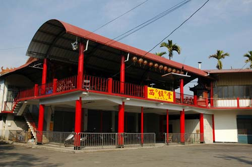
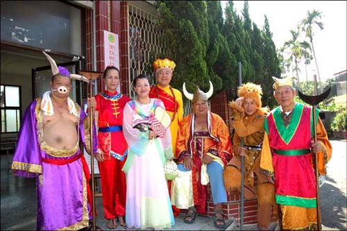

西鎮堂 位於廣興紙寮後方的里活動中心二樓， 是一間主祀 「齊天大聖爺」孫悟空 的廟宇。 西鎮堂為 鐵山社區 最重要的地方廟， 當地人皆稱主神為 「大聖君」。
西鎮堂 原為崁頂劉姓人家所私奉的神壇，最早的神像是從 「解化堂」（即醒靈寺前身）請來的， 因乩童為人作法靈驗而逐漸興旺起來。 至民國六十三年遷至現址後，反而略呈沒落， 其興盛與沒落之原因，與 「黑狗精」 的傳說有密切關係。
廟內的門板及牆上繪有精緻的書畫彩繪，工藝細膩， 值得前往一觀，感受傳統廟宇藝術之美。
光復之初，地方常有人生不明原因的疾病或行為異常， 西鎮堂 乩童指稱是 黑狗精 作祟， 且黑狗精附身在庄民 潘平井 身上。 大聖君藉乩童之口表示將請天兵天將來捉拿。 俟黑狗精出現，代表天兵神將的庄內年輕人窮追不捨，最終將之收伏， 自此庄中逐漸恢復平靜。
然而，後來被黑狗精附身的潘平井，其兒子當上了大聖君的乩童， 卻不怎麼靈驗，連帶也影響到 西鎮堂 的香火， 成為地方上流傳甚廣的一則傳奇故事。
這段傳說不僅見證了 西鎮堂 的興衰起伏，也映照出早期民間信仰與生活交織的獨特面貌。